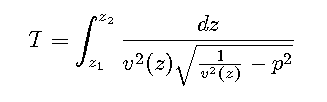
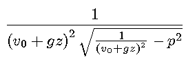
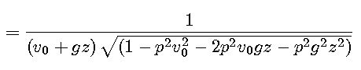
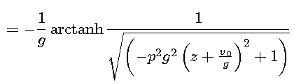

This solution is used if g=0 to avoid the then unneccessary complexity of the solution for media with linear velocity laws.
Travel times are also computed for a horizontally layered isotropic medium in cartesian coordinates.
The total time the ray needs to travel from depth
z1 to depth z2
is given by (Sawarenski & Kirnos, 1960)

where
This integral has to be evaluated layer by layer, with z1 at the layer top and z2 at the layer bottom or the ray's turning point (vertex).
For a constant velocity (g=0) the solution of the integral is
This solution is used if g=0 to avoid the then unneccessary complexity of the solution
for media with linear velocity laws.
For a linear velocity law, the expression under the integral may be rewritten as


Then indefinite integration results in


The desired travel time is then computed numerically as difference of two such terms for z=z1 and z=z2, respectively, and with the parameters v0, and g of the actual velocity law.